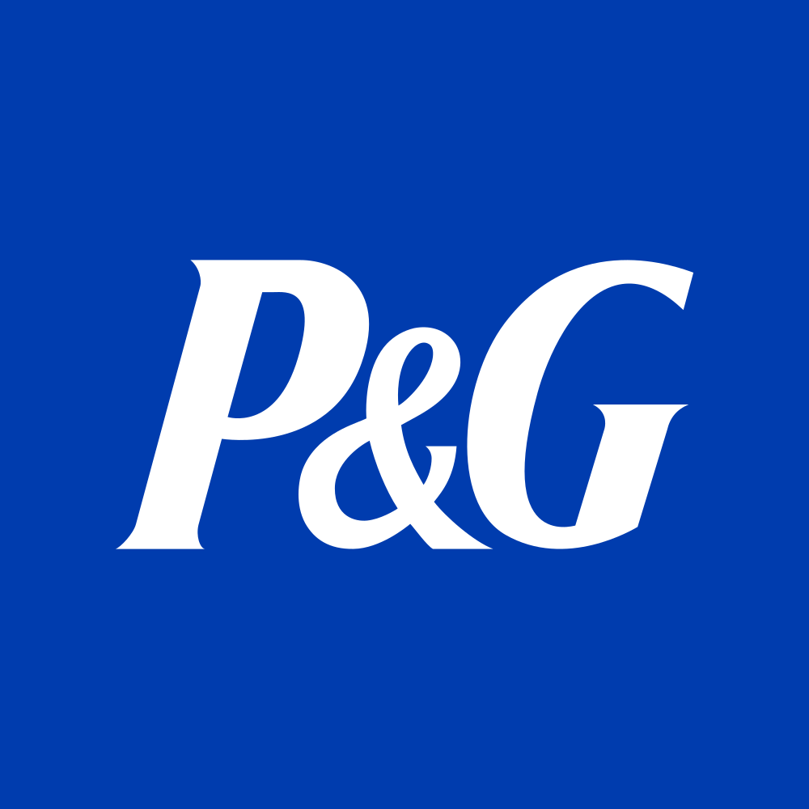

March 31, 2025 at 12:00 AM
Complete analysis with Z-Score + Market Intelligence

4.83
Safe
original
100.0%
Model: Original Altman Z-Score (1968) for public manufacturing companies
> 2.99
1.81 - 2.99
< 1.81
$158.97
$372.7B
25.2
N/A%
20.0%
32.0
hold
N/A
-4.0/10
sideways
-0.87%
0.28%
-4.2%
-1.8%
-4.9%
N/A%
0.14
-0.28
-11.8%
2.7/10
-0.0798
1.048
0.0371
5.291
0.7421
0.1608
4.830
Investment Analysis Narrative: The Procter & Gamble Company (Ticker: PG)
Analysis Date: March 31, 2025
Procter & Gamble (PG) presents a compelling investment opportunity characterized by robust financial health and a strong market position. With an Altman Z-Score of 4.83 categorizing the company as financially safe, combined with a favorable valuation and a strategic market capitalization of $372.7 billion, PG stands out as a resilient blue-chip stock. The current market conditions and technical indicators suggest a strong buy recommendation with a 70% confidence level, positioning PG well for sustainable growth.
The Altman Z-Score of 4.83 firmly places PG in the "Safe" risk category, indicating a very low probability of financial distress. This score is derived from a comprehensive analysis of key financial ratios:
The total assets of approximately $123 billion against liabilities of $70.4 billion further confirm a solid balance sheet structure. The Altman Z-Score’s original model application, with high data quality (1.0% error margin), provides a reliable indicator of PG’s financial resilience. This strong fundamental footing reduces bankruptcy risk and supports long-term investment stability.
PG’s market capitalization of $372.7 billion reflects its status as a dominant player in the consumer staples sector. The current share price of $158.97, paired with a P/E ratio of 25.2, suggests the stock is fairly valued relative to its earnings growth prospects. This P/E multiple is reasonable for a company with PG’s scale, brand strength, and consistent cash flow generation.
Volatility at 20% indicates moderate price fluctuations, typical for large-cap stocks in this sector, while the Relative Strength Index (RSI) at 32.0 signals that the stock is approaching oversold territory. This technical indicator, combined with a sideways trend, suggests a potential near-term price stabilization or rebound, offering an attractive entry point for investors.
PG’s diversified product portfolio and global footprint provide a competitive moat, enabling steady revenue streams even in volatile economic environments. The company’s ability to innovate and adapt to consumer trends further enhances its market position.
Given PG’s strong fundamental health and stable market valuation, the investment outlook is decidedly optimistic. The Altman Z-Score’s indication of financial safety supports confidence in PG’s ability to weather economic downturns and capitalize on growth opportunities. The current market environment, characterized by a moderate P/E ratio and technical signals of undervaluation, reinforces the strong buy recommendation with a 70% confidence level.
Investment Implications:
- Long-Term Growth Potential: PG’s retained earnings and operational efficiency provide a solid foundation for reinvestment and innovation, driving sustainable earnings growth.
- Defensive Stability: The company’s low bankruptcy risk and stable cash flows make it an ideal core holding for risk-averse investors seeking steady returns.
- Entry Point Opportunity: The RSI near oversold levels and sideways price trend suggest a favorable timing window for accumulation before potential upward momentum resumes.
Investors should consider increasing exposure to PG as part of a diversified portfolio, leveraging its resilience and growth prospects to balance risk and reward.
While PG’s financial and market indicators are strong, investors should remain vigilant on the following factors:
Regular review of quarterly earnings, cash flow statements, and market sentiment will be essential to validate the ongoing investment thesis.
Conclusion:
Procter & Gamble’s robust financial health, combined with a stable market valuation and positive technical indicators, make it a highly attractive investment candidate. The company’s low bankruptcy risk, strong retained earnings, and strategic market position underpin a strong buy recommendation. Investors seeking a blend of growth and defensive stability should consider PG a core portfolio holding, while closely monitoring liquidity metrics and macroeconomic developments to optimize timing and risk management.